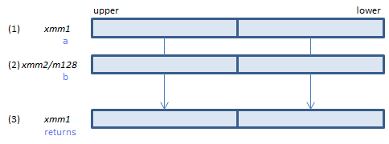
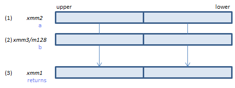
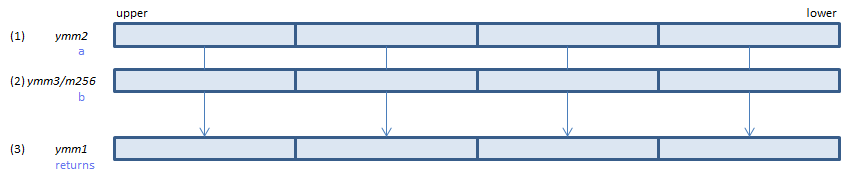
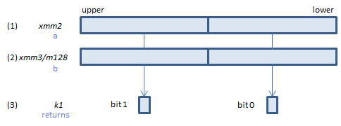
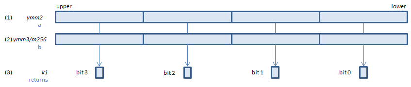
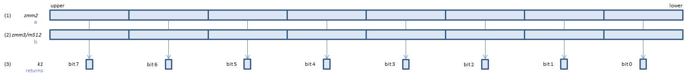

CMPNEQPD - CoMPare Not EQual Packed Double
CMPNEQPD xmm1, xmm2/m128 (S2
__m128d _mm_cmpneq_pd(__m128d a, __m128d b)

For each double, if (1) != (2) or either or both of (1)(2) is NaN, set 1, else set 0, to all bits of the corresponding double of (3).
VCMPNEQPD xmm1, xmm2, xmm3/m128 (V1
__m128d _mm_cmpneq_pd(__m128d a, __m128d b)

For each double, if (1) != (2) or either or both of (1)(2) is NaN, set 1, else set 0, to all bits of the corresponding double of (3).
VCMPNEQPD ymm1, ymm2, ymm3/m256 (V1
__m256d _mm256_cmp_pd(__m256d a, __m256d b, _CMP_NEQ_UQ)

For each double, if (1) != (2) or either or both of (1)(2) is NaN, set 1, else set 0, to all bits of the corresponding double of (3).
VCMPNEQPD k1{k2}, xmm2, xmm3/m128/m64bcst (V5+VL
__mmask8 _mm_cmp_pd_mask(__m128d a, __m128d b, _CMP_NEQ_UQ)
__mmask8 _mm_mask_cmp_pd_mask(__mmask8 k2, __m128d a, __m128d b, _CMP_NEQ_UQ)

For each double, if (1) != (2) or either or both of (1)(2) is NaN, set 1, else set 0, to the corresponding bit of (3).
If k2 bit is 0, the comparison is not done and the corresponding bit of (3) is set to zero. Upper bits of (3) are zero cleared.
VCMPNEQPD k1{k2}, ymm2, ymm3/m256/m64bcst (V5+VL
__mmask8 _mm256_cmp_pd_mask(__m256d a, __m256d b, _CMP_NEQ_UQ)
__mmask8 _mm256_mask_cmp_pd_mask(__mmask8 k2, __m256d a, __m256d b, _CMP_NEQ_UQ)

For each double, if (1) != (2) or either or both of (1)(2) is NaN, set 1, else set 0, to the corresponding bit of (3).
If k2 bit is 0, the comparison is not done and the corresponding bit of (3) is set to zero. Upper bits of (3) are zero cleared.
VCMPNEQPD k1{k2}, zmm2, zmm3/m512/m64bcst{sae} (V5
__mmask8 _mm512_cmp_pd_mask(__m512d a, __m512d b, _CMP_NEQ_UQ)
__mmask8 _mm512_mask_cmp_pd_mask(__mmask8 k2, __m512d a, __m512d b, _CMP_NEQ_UQ)
__mmask8 _mm512_cmp_round_pd_mask(__m512d a, __m512d b, _CMP_NEQ_UQ, int sae)
__mmask8 _mm512_mask_cmp_round_pd_mask(__mmask8 k2, __m512d a, __m512d b, _CMP_NEQ_UQ, int sae)

For each double, if (1) != (2) or either or both of (1)(2) is NaN, set 1, else set 0, to the corresponding bit of (3).
If k2 bit is 0, the comparison is not done and the corresponding bit of (3) is set to zero. Upper bits of (3) are zero cleared.
This instruction is:
Unordered - If either or both of source operands is NaN, condition met.
Quiet - No exception on QNaN
CMPPD/VCMPPD instrucion imm8 value = 4h
x86/x64 SIMD Instruction List
Feedback